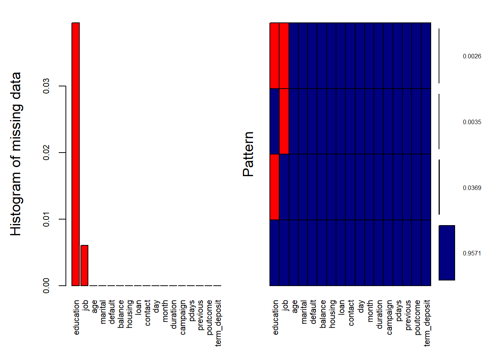

3 ETL
3.1 Tratamiento de datos faltantes
Las columnas que presentan datos faltantes son job y education donde venían codificados bajo la categoría unknown. Es lógico pensar que dicha categoría no sean NaNs sino una categoría propia con capacidad informativa por sí sola. Pero en el EDA no hemos observado una distribución diferente a la del resto de categorías, a diferencia de para contact o poutcome donde unknown si parece ser una categoría propia.
El método de imputación utilizado aquí es sencillo. Se utiliza un RandomForest para predecir cada uno de los valores faltantes a partir del resto de variables predictoras que tenemos.
train = data[trainIndex ,]
train[train$education=='unknown',"education"] <- NA
train[train$job=='unknown',"job"] <- NA## train
##
## 2 Variables 34111 Observations
## --------------------------------------------------------------------------------
## job
## n missing distinct
## 33904 207 11
##
## lowest : admin. blue-collar entrepreneur housemaid management
## highest: self-employed services student technician unemployed
##
## admin. (3892, 0.115), blue-collar (7608, 0.224), entrepreneur (1137, 0.034),
## housemaid (937, 0.028), management (7130, 0.210), retired (1503, 0.044),
## self-employed (1183, 0.035), services (3215, 0.095), student (581, 0.017),
## technician (5763, 0.170), unemployed (955, 0.028)
## --------------------------------------------------------------------------------
## education
## n missing distinct
## 32764 1347 3
##
## Value primary secondary tertiary
## Frequency 5272 17645 9847
## Proportion 0.161 0.539 0.301
## --------------------------------------------------------------------------------La siguiente visualización nos indica que no parece existir ningún patrón en la falta de valores, el patrón más común es donde a la observación solo le falta el valor para education, algo lógico ya que es una variable con el ratio de valores missing más alto.
aggr_plot <- aggr(train, col=c('navyblue','red'), numbers=TRUE, sortVars=TRUE,
labels=names(train), cex.axis=.7, gap=3, cex.numbers=0.5,
ylab=c("Histogram of missing data","Pattern"))
##
## Variables sorted by number of missings:
## Variable Count
## education 0.039488728
## job 0.006068424
## age 0.000000000
## marital 0.000000000
## default 0.000000000
## balance 0.000000000
## housing 0.000000000
## loan 0.000000000
## contact 0.000000000
## day 0.000000000
## month 0.000000000
## duration 0.000000000
## campaign 0.000000000
## pdays 0.000000000
## previous 0.000000000
## poutcome 0.000000000
## term_deposit 0.000000000Realizamos la imputación de valores.
##
## Missing value imputation by random forests
##
## Variables to impute: job, education
## Variables used to impute: age, job, marital, education, default, balance, housing, loan, contact, day, month, duration, campaign, pdays, previous, poutcome, term_deposit
## iter 1: ..
## iter 2: ..
## iter 3: ..
## iter 4: ..## age job marital education
## Min. :18.00 blue-collar:7699 Length:34111 primary : 5505
## 1st Qu.:33.00 management :7199 Class :character secondary:18500
## Median :39.00 technician :5771 Mode :character tertiary :10106
## Mean :40.79 admin. :3895
## 3rd Qu.:48.00 services :3216
## Max. :95.00 retired :1534
## (Other) :4797
## default balance housing loan
## Length:34111 Min. : -8019.0 Length:34111 Length:34111
## Class :character 1st Qu.: 63.5 Class :character Class :character
## Mode :character Median : 432.0 Mode :character Mode :character
## Mean : 1345.1
## 3rd Qu.: 1392.5
## Max. :102127.0
##
## contact day month duration
## Length:34111 Min. : 1.00 Length:34111 Min. : 0.0
## Class :character 1st Qu.: 8.00 Class :character 1st Qu.: 100.0
## Mode :character Median :16.00 Mode :character Median : 176.0
## Mean :15.84 Mean : 255.6
## 3rd Qu.:21.00 3rd Qu.: 315.0
## Max. :31.00 Max. :4918.0
##
## campaign pdays previous poutcome
## Min. : 1.00 Min. : -1.0 Min. : 0.0000 Length:34111
## 1st Qu.: 1.00 1st Qu.: -1.0 1st Qu.: 0.0000 Class :character
## Median : 2.00 Median : -1.0 Median : 0.0000 Mode :character
## Mean : 2.81 Mean : 34.1 Mean : 0.4633
## 3rd Qu.: 3.00 3rd Qu.: -1.0 3rd Qu.: 0.0000
## Max. :63.00 Max. :536.0 Max. :275.0000
##
## term_deposit
## Length:34111
## Class :character
## Mode :character
##
##
##
## ## train_imputed
##
## 17 Variables 34111 Observations
## --------------------------------------------------------------------------------
## age
## n missing distinct Info Mean Gmd .05 .10
## 34111 0 74 0.999 40.79 11.47 27 29
## .25 .50 .75 .90 .95
## 33 39 48 56 58
##
## lowest : 18 19 20 21 22, highest: 87 89 90 92 95
## --------------------------------------------------------------------------------
## job
## n missing distinct
## 34111 0 11
##
## lowest : admin. blue-collar entrepreneur housemaid management
## highest: self-employed services student technician unemployed
##
## admin. (3895, 0.114), blue-collar (7699, 0.226), entrepreneur (1137, 0.033),
## housemaid (939, 0.028), management (7199, 0.211), retired (1534, 0.045),
## self-employed (1183, 0.035), services (3216, 0.094), student (582, 0.017),
## technician (5771, 0.169), unemployed (956, 0.028)
## --------------------------------------------------------------------------------
## marital
## n missing distinct
## 34111 0 3
##
## Value divorced married single
## Frequency 3982 20680 9449
## Proportion 0.117 0.606 0.277
## --------------------------------------------------------------------------------
## education
## n missing distinct
## 34111 0 3
##
## Value primary secondary tertiary
## Frequency 5505 18500 10106
## Proportion 0.161 0.542 0.296
## --------------------------------------------------------------------------------
## default
## n missing distinct
## 34111 0 2
##
## Value no yes
## Frequency 33463 648
## Proportion 0.981 0.019
## --------------------------------------------------------------------------------
## balance
## n missing distinct Info Mean Gmd .05 .10
## 34111 0 6531 0.999 1345 2045 -191.0 0.0
## .25 .50 .75 .90 .95
## 63.5 432.0 1392.5 3570.0 5771.0
##
## lowest : -8019 -6847 -4057 -3372 -3313, highest: 64343 66721 71188 81204 102127
## --------------------------------------------------------------------------------
## housing
## n missing distinct
## 34111 0 2
##
## Value no yes
## Frequency 14509 19602
## Proportion 0.425 0.575
## --------------------------------------------------------------------------------
## loan
## n missing distinct
## 34111 0 2
##
## Value no yes
## Frequency 28463 5648
## Proportion 0.834 0.166
## --------------------------------------------------------------------------------
## contact
## n missing distinct
## 34111 0 3
##
## Value cellular telephone unknown
## Frequency 21769 2097 10245
## Proportion 0.638 0.061 0.300
## --------------------------------------------------------------------------------
## day
## n missing distinct Info Mean Gmd .05 .10
## 34111 0 31 0.998 15.84 9.544 3 5
## .25 .50 .75 .90 .95
## 8 16 21 28 30
##
## lowest : 1 2 3 4 5, highest: 27 28 29 30 31
## --------------------------------------------------------------------------------
## month
## n missing distinct
## 34111 0 12
##
## lowest : apr aug dec feb jan, highest: mar may nov oct sep
##
## Value apr aug dec feb jan jul jun mar may nov oct
## Frequency 2142 4813 171 1823 969 5244 4125 214 10852 3113 419
## Proportion 0.063 0.141 0.005 0.053 0.028 0.154 0.121 0.006 0.318 0.091 0.012
##
## Value sep
## Frequency 226
## Proportion 0.007
## --------------------------------------------------------------------------------
## duration
## n missing distinct Info Mean Gmd .05 .10
## 34111 0 1485 1 255.6 235 35 58
## .25 .50 .75 .90 .95
## 100 176 315 544 749
##
## lowest : 0 2 3 4 5, highest: 3284 3322 3366 3881 4918
## --------------------------------------------------------------------------------
## campaign
## n missing distinct Info Mean Gmd .05 .10
## 34111 0 45 0.921 2.81 2.435 1 1
## .25 .50 .75 .90 .95
## 1 2 3 5 8
##
## lowest : 1 2 3 4 5, highest: 43 44 55 58 63
## --------------------------------------------------------------------------------
## pdays
## n missing distinct Info Mean Gmd .05 .10
## 34111 0 409 0.393 34.1 62.25 -1 -1
## .25 .50 .75 .90 .95
## -1 -1 -1 175 301
##
## lowest : -1 1 2 4 5, highest: 495 515 518 520 536
## --------------------------------------------------------------------------------
## previous
## n missing distinct Info Mean Gmd .05 .10
## 34111 0 36 0.393 0.4633 0.8488 0 0
## .25 .50 .75 .90 .95
## 0 0 0 1 3
##
## lowest : 0 1 2 3 4, highest: 37 38 51 58 275
## --------------------------------------------------------------------------------
## poutcome
## n missing distinct
## 34111 0 4
##
## Value failure other success unknown
## Frequency 3401 1201 625 28884
## Proportion 0.100 0.035 0.018 0.847
## --------------------------------------------------------------------------------
## term_deposit
## n missing distinct
## 34111 0 2
##
## Value no yes
## Frequency 30938 3173
## Proportion 0.907 0.093
## --------------------------------------------------------------------------------3.2 Transformación de variables
Una vez se han obtenido las imputaciones de los missing values vamos a proceder a realizar una selección de variables. El procedimiento es el siguiente, nos enfocamos en la variable con menor importancia, entendiendo que una variable es importante si el peso dado en la regresión se encuentra alejado de 0. A esta variable tratamos de buscarla un tratamiento diferente que pueda mejorar el desempeño del modelo así como aumentar su importancia dentro del ranking.
Consideramos que una transformación mejora el desempeño si el F-score calculado mediante 10-fold cross validation mejora. Esta validación cruzada se ha aplicado en el conjunto de train, nunca en test para evitar sobreajustes.
train.control <- trainControl(method = "cv", number = 10, summaryFunction=prSummary,classProbs = TRUE)# Train the model
model <- train(term_deposit ~., data = train, method = "glm",
trControl = train.control)## Warning in train.default(x, y, weights = w, ...): The metric "Accuracy" was not
## in the result set. AUC will be used instead.## Generalized Linear Model
##
## 34111 samples
## 16 predictor
## 2 classes: 'no', 'yes'
##
## No pre-processing
## Resampling: Cross-Validated (10 fold)
## Summary of sample sizes: 30701, 30699, 30700, 30700, 30699, 30699, ...
## Resampling results:
##
## AUC Precision Recall F
## 0.9889767 0.9320116 0.981382 0.9560568importance <- varImp(model, scale=FALSE)
# summarize importance
print(rownames(importance$importance))## [1] "age" "`jobblue-collar`" "jobentrepreneur"
## [4] "jobhousemaid" "jobmanagement" "jobretired"
## [7] "`jobself-employed`" "jobservices" "jobstudent"
## [10] "jobtechnician" "jobunemployed" "maritalmarried"
## [13] "maritalsingle" "educationsecondary" "educationtertiary"
## [16] "defaultyes" "balance" "housingyes"
## [19] "loanyes" "contacttelephone" "contactunknown"
## [22] "day" "monthaug" "monthdec"
## [25] "monthfeb" "monthjan" "monthjul"
## [28] "monthjun" "monthmar" "monthmay"
## [31] "monthnov" "monthoct" "monthsep"
## [34] "duration" "campaign" "pdays"
## [37] "previous" "poutcomeother" "poutcomesuccess"
## [40] "poutcomeunknown"3.2.1 Train poutcome
La variable categórica que informa del resultado en la última campaña es la menos informativa, vamos a probar a realizar una re-categorización donde agrupemos en una categoría las que tienen una menor probabilidad de contratar (failure, other y unknown) y en otra categoría success.
poutcome_aprox <- train
poutcome_aprox[poutcome_aprox$poutcome=="failure" | poutcome_aprox$poutcome=="other" | poutcome_aprox$poutcome=="unknown","poutcome"] <- "bad_poutcome"
poutcome_aprox[poutcome_aprox$poutcome=="success","poutcome"] <- "success_poutcome"train.control <- trainControl(method = "cv", number = 10, summaryFunction=prSummary,classProbs = TRUE)# Train the model
model <- train(term_deposit ~., data = poutcome_aprox, method = "glm",
trControl = train.control)## Warning in train.default(x, y, weights = w, ...): The metric "Accuracy" was not
## in the result set. AUC will be used instead.## Generalized Linear Model
##
## 34111 samples
## 16 predictor
## 2 classes: 'no', 'yes'
##
## No pre-processing
## Resampling: Cross-Validated (10 fold)
## Summary of sample sizes: 30699, 30701, 30700, 30700, 30700, 30700, ...
## Resampling results:
##
## AUC Precision Recall F
## 0.9888656 0.9318751 0.9814791 0.9560322Con esta nueva distribución de la variable no parece haber mejora ni cobrar mayor importancia en el ranking de variables, por lo que el siguiente paso sería a probar a eliminar dicha variable.
3.2.2 Variable previous
La siguiente variable con menor importancia es previous, variable cuantitativa que muestra el número de contactos que realizó el cliente en campañas anteriores. En este caso, tal y como hicimos en el exploratorio, vamos a categorizar esta variable en dos categorías: Sin contacto previo y contacto previo.
previous_aprox <- train %>% mutate(previous_categorica = cut(previous, breaks = c(0, 1, 300), right = FALSE, include.lowest = TRUE, labels = c('Sin Contacto previo', 'Contacto previo')))
previous_aprox$previous <- NULLtrain.control <- trainControl(method = "cv", number = 10, summaryFunction=prSummary,classProbs = TRUE)# Train the model
model <- train(term_deposit ~., data = previous_aprox, method = "glm",
trControl = train.control)## Warning in train.default(x, y, weights = w, ...): The metric "Accuracy" was not
## in the result set. AUC will be used instead.## Generalized Linear Model
##
## 34111 samples
## 16 predictor
## 2 classes: 'no', 'yes'
##
## No pre-processing
## Resampling: Cross-Validated (10 fold)
## Summary of sample sizes: 30700, 30700, 30699, 30700, 30700, 30699, ...
## Resampling results:
##
## AUC Precision Recall F
## 0.9889662 0.9319703 0.9811883 0.9559429Esta transformación de la variable previous no parece mejorar el desempeño del modelo.
3.2.3 Variable pdays
La siguiente variable en el ranking es pdays, variable cuantitativa que muestra los días que han pasado desde que se contactó con él en la anterior campaña. En el exploratorio se ha propuesto ya una categorización que vamos a comprobar ahora.
pdays_aprox = train %>% mutate(pdays_categorica = cut(pdays, breaks = c(-1, 0, 210, 536), right = FALSE, include.lowest = TRUE, labels = c('No contacto', '<7 Meses', '>7 Meses')))
pdays_aprox$pdays <- NULLtrain.control <- trainControl(method = "cv", number = 10, summaryFunction=prSummary,classProbs = TRUE)# Train the model
model <- train(term_deposit ~., data = pdays_aprox, method = "glm",
trControl = train.control)## Warning in train.default(x, y, weights = w, ...): The metric "Accuracy" was not
## in the result set. AUC will be used instead.## Generalized Linear Model
##
## 34111 samples
## 16 predictor
## 2 classes: 'no', 'yes'
##
## No pre-processing
## Resampling: Cross-Validated (10 fold)
## Summary of sample sizes: 30701, 30700, 30700, 30699, 30700, 30700, ...
## Resampling results:
##
## AUC Precision Recall F
## 0.9889236 0.9319423 0.9811556 0.9559117Con la categorización de la variable pdays el modelo no parece mejorar.
3.2.4 Variable campaign
La siguiente variable es campaign, variable cuantitativa que muestra el número de contactos en esta campaña. Ya en el EDA se ha propuesto una categorización que vamos a analizar a continuación.
campaign_aprox = train %>% mutate(campaign_binaria = cut(campaign, breaks = c(1, 2, 300), right = FALSE, include.lowest = TRUE, labels = c('1Contacto', '+1Contacto')))
campaign_aprox$campaign <- NULLtrain.control <- trainControl(method = "cv", number = 10, summaryFunction=prSummary,classProbs = TRUE)# Train the model
model <- train(term_deposit ~., data = campaign_aprox, method = "glm",
trControl = train.control)## Warning in train.default(x, y, weights = w, ...): The metric "Accuracy" was not
## in the result set. AUC will be used instead.## Generalized Linear Model
##
## 34111 samples
## 16 predictor
## 2 classes: 'no', 'yes'
##
## No pre-processing
## Resampling: Cross-Validated (10 fold)
## Summary of sample sizes: 30700, 30701, 30699, 30700, 30700, 30700, ...
## Resampling results:
##
## AUC Precision Recall F
## 0.9889353 0.9322811 0.9815437 0.956275El nuevo tratamiento de la variable campaign mejora el desempeño del modelo.
3.2.5 Variable duration
La siguiente variable es duration, variable cuantitativa que muestra la duración en segundos del último contacto mantenido con el cliente. En el EDA se ha propuesto realizar una transformación logarítmica a la variable para tratar de mejorar las diferencias entre la distribución de esta variable en los casos de contratación de los que no.
duration_aprox <- train[train$duration>0,]
duration_aprox$duration <- log10(duration_aprox$duration)train.control <- trainControl(method = "cv", number = 10, summaryFunction=prSummary,classProbs = TRUE)# Train the model
model <- train(term_deposit ~., data = duration_aprox, method = "glm",
trControl = train.control)## Warning in train.default(x, y, weights = w, ...): The metric "Accuracy" was not
## in the result set. AUC will be used instead.## Generalized Linear Model
##
## 34108 samples
## 16 predictor
## 2 classes: 'no', 'yes'
##
## No pre-processing
## Resampling: Cross-Validated (10 fold)
## Summary of sample sizes: 30697, 30697, 30698, 30698, 30698, 30696, ...
## Resampling results:
##
## AUC Precision Recall F
## 0.9887624 0.932604 0.9812509 0.9563054Este tratamiento parece mejorar el desempeño del modelo.
3.2.6 Variable month
Variable categórica que indica el mes en el que se produce el contacto actual con el cliente. Vamos a re-categorizar la variable en dos categorias en función de si es un mes con alto índice de contrataciones o no.
month_aprox[month_aprox$month=="jan","month"] <- "no_month"
month_aprox[month_aprox$month=="feb","month"] <- "no_month"
month_aprox[month_aprox$month=="mar","month"] <- "yes_month"
month_aprox[month_aprox$month=="apr","month"] <- "no_month"
month_aprox[month_aprox$month=="may","month"] <- "no_month"
month_aprox[month_aprox$month=="jun","month"] <- "no_month"
month_aprox[month_aprox$month=="jul","month"] <- "no_month"
month_aprox[month_aprox$month=="aug","month"] <- "no_month"
month_aprox[month_aprox$month=="sep","month"] <- "yes_month"
month_aprox[month_aprox$month=="oct","month"] <- "yes_month"
month_aprox[month_aprox$month=="nov","month"] <- "no_month"
month_aprox[month_aprox$month=="dec","month"] <- "yes_month"train.control <- trainControl(method = "cv", number = 10, summaryFunction=prSummary,classProbs = TRUE)# Train the model
model <- train(term_deposit ~., data = month_aprox, method = "glm",
trControl = train.control)## Warning in train.default(x, y, weights = w, ...): The metric "Accuracy" was not
## in the result set. AUC will be used instead.## Generalized Linear Model
##
## 34108 samples
## 16 predictor
## 2 classes: 'no', 'yes'
##
## No pre-processing
## Resampling: Cross-Validated (10 fold)
## Summary of sample sizes: 30696, 30698, 30698, 30697, 30696, 30697, ...
## Resampling results:
##
## AUC Precision Recall F
## 0.9878167 0.9303059 0.9820266 0.9554642Este nuevo tratamiento no mejora el desempeño del modelo.
3.2.7 Variable contact
Variable categórica que indica la forma en la que se contactó con el cliente. Vamos a tratar de reducir las categorías a escala binaria en función de si es unknown o no.
contact_aprox <- train
contact_aprox[contact_aprox$contact=="unknown","contact"] <- "unknown"
contact_aprox[contact_aprox$contact!="unknown","contact"] <- "not_unknown"train.control <- trainControl(method = "cv", number = 10, summaryFunction=prSummary,classProbs = TRUE)# Train the model
model <- train(term_deposit ~., data = contact_aprox, method = "glm",
trControl = train.control)## Warning in train.default(x, y, weights = w, ...): The metric "Accuracy" was not
## in the result set. AUC will be used instead.## Generalized Linear Model
##
## 34108 samples
## 16 predictor
## 2 classes: 'no', 'yes'
##
## No pre-processing
## Resampling: Cross-Validated (10 fold)
## Summary of sample sizes: 30696, 30698, 30697, 30696, 30698, 30698, ...
## Resampling results:
##
## AUC Precision Recall F
## 0.9887404 0.9327847 0.9810894 0.9563258Este nuevo tratamiento parece mejorar el desempeño del modelo.
3.2.8 Variable balance
Variable cuantitativa que indica el saldo del cliente. En el exploratorio se ha propuesto categorizar esta variable en 4 categorías (saldo negativo, bajo, medio y alto).
balance_aprox = train %>% mutate(balance_categorica = cut(balance, breaks = c(-10000, 0, 2000, 10000, 105000), right = FALSE, labels = c('Negativo','Bajo','Medio', 'Alto')))train.control <- trainControl(method = "cv", number = 10, summaryFunction=prSummary,classProbs = TRUE)# Train the model
model <- train(term_deposit ~., data = balance_aprox, method = "glm",
trControl = train.control)## Warning in train.default(x, y, weights = w, ...): The metric "Accuracy" was not
## in the result set. AUC will be used instead.## Generalized Linear Model
##
## 34108 samples
## 17 predictor
## 2 classes: 'no', 'yes'
##
## No pre-processing
## Resampling: Cross-Validated (10 fold)
## Summary of sample sizes: 30697, 30697, 30698, 30698, 30696, 30698, ...
## Resampling results:
##
## AUC Precision Recall F
## 0.9888094 0.9327786 0.9809278 0.9562439Este tratamiento no aporta beneficio al modelo.
3.2.9 Variable age
Variable cuantitativa que indica la edad del cliente. En el exploratorio se ha propuesto categorizar esta variable en 4 grupos (ancianos, mayores, joven y mediana edad).
age_aprox = train %>% mutate(age_categorica = cut(age, breaks = c(0, 29, 44, 59, 100), right = TRUE, labels = c('Joven','MedianaEdad','Mayores','Ancianos')))
age_aprox$age <- NULLtrain.control <- trainControl(method = "cv", number = 10, summaryFunction=prSummary,classProbs = TRUE)# Train the model
model <- train(term_deposit ~., data = age_aprox, method = "glm",
trControl = train.control)## Warning in train.default(x, y, weights = w, ...): The metric "Accuracy" was not
## in the result set. AUC will be used instead.## Generalized Linear Model
##
## 34108 samples
## 16 predictor
## 2 classes: 'no', 'yes'
##
## No pre-processing
## Resampling: Cross-Validated (10 fold)
## Summary of sample sizes: 30697, 30697, 30696, 30698, 30697, 30698, ...
## Resampling results:
##
## AUC Precision Recall F
## 0.989032 0.9332993 0.9809925 0.9565504En este caso el modelo mejora con este tratamiento.
3.3 Selección de variables
Una vez hemos decidido las transformaciones de variables a aplicar vamos a seleccionar las variables predictoras que utilizar en el modelo. Para ello se han utilizado tres métodos de selección, los tres de tipo wrapper. Estas aproximaciones son bakward, forward y both. Las tres aproximaciones se basan en una búsqueda de la mejor configuración de variables en base a optimizar el AIC del modelo.
##
## Call:
## glm(formula = term_deposit ~ job + marital + education + balance +
## housing + loan + contact + day + month + duration + pdays +
## poutcome + campaign_binaria + age_categorica, family = "binomial",
## data = train)
##
## Deviance Residuals:
## Min 1Q Median 3Q Max
## -3.3087 -0.3346 -0.1702 -0.0797 4.3082
##
## Coefficients:
## Estimate Std. Error z value Pr(>|z|)
## (Intercept) -1.225e+01 2.930e-01 -41.802 < 2e-16 ***
## jobblue-collar -2.584e-01 8.881e-02 -2.910 0.003617 **
## jobentrepreneur -5.423e-01 1.572e-01 -3.450 0.000562 ***
## jobhousemaid -7.257e-01 1.763e-01 -4.115 3.87e-05 ***
## jobmanagement -2.481e-01 9.433e-02 -2.630 0.008529 **
## jobretired -2.328e-01 1.347e-01 -1.728 0.083902 .
## jobself-employed -4.134e-01 1.411e-01 -2.931 0.003380 **
## jobservices -2.470e-01 1.034e-01 -2.389 0.016897 *
## jobstudent 2.538e-01 1.527e-01 1.662 0.096551 .
## jobtechnician -1.785e-01 8.748e-02 -2.040 0.041355 *
## jobunemployed -3.030e-01 1.448e-01 -2.092 0.036432 *
## maritalmarried -2.781e-01 7.185e-02 -3.871 0.000109 ***
## maritalsingle -1.306e-01 8.176e-02 -1.597 0.110198
## educationsecondary 4.173e-02 7.754e-02 0.538 0.590411
## educationtertiary 3.712e-01 9.259e-02 4.009 6.10e-05 ***
## balance 1.759e-05 6.565e-06 2.679 0.007377 **
## housingyes -5.076e-01 5.540e-02 -9.161 < 2e-16 ***
## loanyes -2.630e-01 7.030e-02 -3.741 0.000183 ***
## contactunknown -1.669e+00 8.637e-02 -19.323 < 2e-16 ***
## day 1.280e-02 3.273e-03 3.912 9.17e-05 ***
## monthaug -4.871e-01 1.018e-01 -4.786 1.70e-06 ***
## monthdec 8.613e-01 2.130e-01 4.044 5.25e-05 ***
## monthfeb -7.919e-02 1.247e-01 -0.635 0.525266
## monthjan -1.699e+00 1.814e-01 -9.363 < 2e-16 ***
## monthjul -8.772e-01 9.904e-02 -8.857 < 2e-16 ***
## monthjun 8.273e-01 1.214e-01 6.815 9.45e-12 ***
## monthmar 2.741e+00 1.847e-01 14.835 < 2e-16 ***
## monthmay -1.108e-01 9.160e-02 -1.209 0.226588
## monthnov -6.073e-01 1.039e-01 -5.846 5.04e-09 ***
## monthoct 1.671e+00 1.498e-01 11.156 < 2e-16 ***
## monthsep 1.190e+00 1.933e-01 6.157 7.41e-10 ***
## duration 4.826e+00 8.355e-02 57.764 < 2e-16 ***
## pdays -3.077e-03 5.098e-04 -6.036 1.58e-09 ***
## poutcomeother 6.015e-02 1.293e-01 0.465 0.641801
## poutcomesuccess 1.837e+00 1.284e-01 14.307 < 2e-16 ***
## poutcomeunknown -7.150e-01 1.354e-01 -5.281 1.28e-07 ***
## campaign_binaria+1Contacto -3.019e-01 4.784e-02 -6.310 2.79e-10 ***
## age_categoricaMedianaEdad -3.433e-01 7.357e-02 -4.666 3.08e-06 ***
## age_categoricaMayores -3.929e-01 8.663e-02 -4.535 5.76e-06 ***
## age_categoricaAncianos 4.974e-01 1.455e-01 3.419 0.000629 ***
## ---
## Signif. codes: 0 '***' 0.001 '**' 0.01 '*' 0.05 '.' 0.1 ' ' 1
##
## (Dispersion parameter for binomial family taken to be 1)
##
## Null deviance: 21112 on 34107 degrees of freedom
## Residual deviance: 13348 on 34068 degrees of freedom
## AIC: 13428
##
## Number of Fisher Scoring iterations: 7empty_model <- glm(term_deposit ~ 1, data=train, family='binomial')
horizonte <- formula(term_deposit ~ age_categorica + job + marital + education + default + balance + housing + loan + contact + day + month + duration + campaign_binaria + pdays + previous + poutcome)##
## Call:
## glm(formula = term_deposit ~ duration + month + contact + poutcome +
## housing + age_categorica + education + pdays + campaign_binaria +
## job + loan + marital + day + balance, family = "binomial",
## data = train)
##
## Deviance Residuals:
## Min 1Q Median 3Q Max
## -3.3087 -0.3346 -0.1702 -0.0797 4.3082
##
## Coefficients:
## Estimate Std. Error z value Pr(>|z|)
## (Intercept) -1.225e+01 2.930e-01 -41.802 < 2e-16 ***
## duration 4.826e+00 8.355e-02 57.764 < 2e-16 ***
## monthaug -4.871e-01 1.018e-01 -4.786 1.70e-06 ***
## monthdec 8.613e-01 2.130e-01 4.044 5.25e-05 ***
## monthfeb -7.919e-02 1.247e-01 -0.635 0.525266
## monthjan -1.699e+00 1.814e-01 -9.363 < 2e-16 ***
## monthjul -8.772e-01 9.904e-02 -8.857 < 2e-16 ***
## monthjun 8.273e-01 1.214e-01 6.815 9.45e-12 ***
## monthmar 2.741e+00 1.847e-01 14.835 < 2e-16 ***
## monthmay -1.108e-01 9.160e-02 -1.209 0.226588
## monthnov -6.073e-01 1.039e-01 -5.846 5.04e-09 ***
## monthoct 1.671e+00 1.498e-01 11.156 < 2e-16 ***
## monthsep 1.190e+00 1.933e-01 6.157 7.41e-10 ***
## contactunknown -1.669e+00 8.637e-02 -19.323 < 2e-16 ***
## poutcomeother 6.015e-02 1.293e-01 0.465 0.641801
## poutcomesuccess 1.837e+00 1.284e-01 14.307 < 2e-16 ***
## poutcomeunknown -7.150e-01 1.354e-01 -5.281 1.28e-07 ***
## housingyes -5.076e-01 5.540e-02 -9.161 < 2e-16 ***
## age_categoricaMedianaEdad -3.433e-01 7.357e-02 -4.666 3.08e-06 ***
## age_categoricaMayores -3.929e-01 8.663e-02 -4.535 5.76e-06 ***
## age_categoricaAncianos 4.974e-01 1.455e-01 3.419 0.000629 ***
## educationsecondary 4.173e-02 7.754e-02 0.538 0.590411
## educationtertiary 3.712e-01 9.259e-02 4.009 6.10e-05 ***
## pdays -3.077e-03 5.098e-04 -6.036 1.58e-09 ***
## campaign_binaria+1Contacto -3.019e-01 4.784e-02 -6.310 2.79e-10 ***
## jobblue-collar -2.584e-01 8.881e-02 -2.910 0.003617 **
## jobentrepreneur -5.423e-01 1.572e-01 -3.450 0.000562 ***
## jobhousemaid -7.257e-01 1.763e-01 -4.115 3.87e-05 ***
## jobmanagement -2.481e-01 9.433e-02 -2.630 0.008529 **
## jobretired -2.328e-01 1.347e-01 -1.728 0.083902 .
## jobself-employed -4.134e-01 1.411e-01 -2.931 0.003380 **
## jobservices -2.470e-01 1.034e-01 -2.389 0.016897 *
## jobstudent 2.538e-01 1.527e-01 1.662 0.096551 .
## jobtechnician -1.785e-01 8.748e-02 -2.040 0.041355 *
## jobunemployed -3.030e-01 1.448e-01 -2.092 0.036432 *
## loanyes -2.630e-01 7.030e-02 -3.741 0.000183 ***
## maritalmarried -2.781e-01 7.185e-02 -3.871 0.000109 ***
## maritalsingle -1.306e-01 8.176e-02 -1.597 0.110198
## day 1.280e-02 3.273e-03 3.912 9.17e-05 ***
## balance 1.759e-05 6.565e-06 2.679 0.007377 **
## ---
## Signif. codes: 0 '***' 0.001 '**' 0.01 '*' 0.05 '.' 0.1 ' ' 1
##
## (Dispersion parameter for binomial family taken to be 1)
##
## Null deviance: 21112 on 34107 degrees of freedom
## Residual deviance: 13348 on 34068 degrees of freedom
## AIC: 13428
##
## Number of Fisher Scoring iterations: 7Con las tres aproximaciones se ha llegado al mismo resultado de las mismas 14 variables predictoras, por ello a la hora de realizar el modelado solo se va a utilizar un modelo.